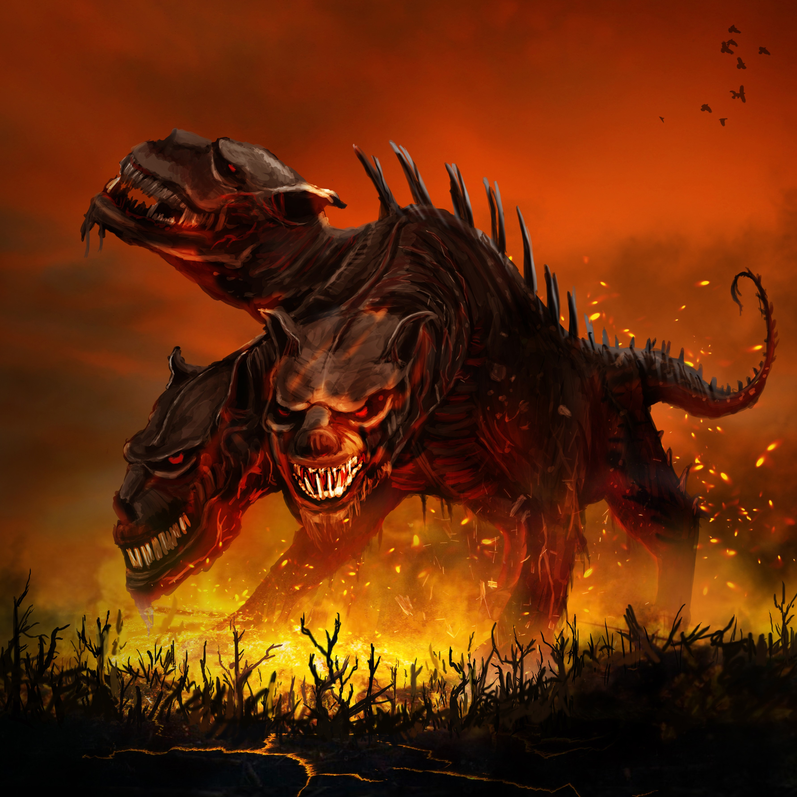
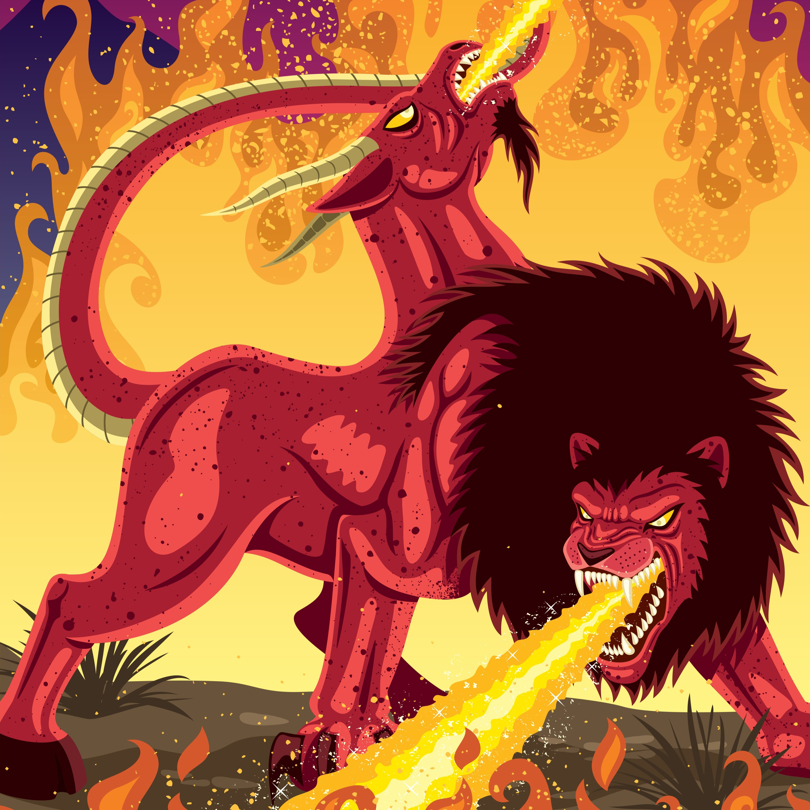

Mythical Creatures
Centaur
Centaurs are half-man, half-horse creatures that lived in the mountains of Thessaly. The upper part of the body is of the man and switches at the torso. Typical centaur nature involved wildness and plenty enjoyment of alcohol. Chiron is a notable expection as a centaur who is wise and level-headed.
Cerberus
Cerberus, also known as the Hound of Hades, is the guard dog of the Underworld ensuring no dead can leave. Cerberus is typically depicted as having three monsterous heads although some interpretations have as many as fifty heads.
Chimera
Chimera is a sibling beast to Cerberus. The creature is a hybrid of lion, goat, snake, and dragon features. It could fly with their dragon wings and wreak havoc with its fire-breath. The original Chimera was slain by Bellerophon.
Gorgon
Gorgons are winged-female creatures with hair made of snakes. Looking a gorgon in the eye causes the viewer to abruptly turn to stone and die. The most notable gorgon is Medusa along with her two sisters, Stheno and Euryale.
Minotaur
Another half-man, half-beast, minotaurs are represented with the head and tail of a bull and the body of a man. The minotaur was conceived through the union of wife of King Minos of Crete and the sacred bull. It was then confined to Daedalus's labyrinth.
Siren

In Greek Mythology, Sirens are creatures with female faces and chests and the wings and lower body of birds. Some present-day depictions are closer to that of a mermaid. Their hypnotizing voices lured sailors to their deaths.